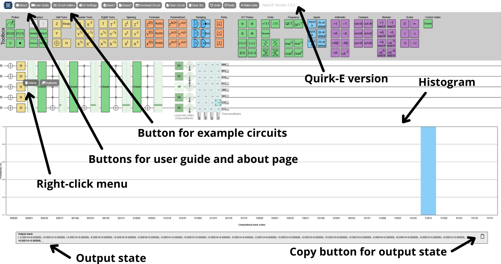

Quirk-E is an open-source quantum circuit simulator built as an extension of the original Quirk platform. Quirk-E has been developed as part of the Developer Experience in Iterative Quantum Software Engineering (DEQSE) project by the Empirical Software Engineering Research Team and the QIC Team at the University of Jyväskylä, Finland.
The Quirk-E tool adds more functionalities to the Quirk quantum circuit simulator. The Quirk-E is free to use and modify. However, you must add reference in case of any publication. Quirk-E is also embedded in the DEQSE Visual Studio Code Extension, designed to enhance the quantum software development experience. The extension is available for download from GitHub and Microsoft Marketplace.
As Quirk-E is developed on top of original Quirk, the Quirk User Guide is fully applicable to Quirk-E as well. Quirk user guide can be found in this GitHub wiki.
By right clicking a gate on a circuit, you will open a context menu. In that menu, you have two options: duplicate gate and delete gate. When you press the Duplicate button, same gate appears next to the current gate. When you press Delete button, the gate is deleted from the circuit.
Below the circuit, there is a probability distribution histogram. The histogram shows the computational basis states, the probability for each possible state. It is updated in real time.
Below the histogram, a text box for output state is available. It shows the complete output state as an array. In the box top right corner there an icon button for copying the output state. The output state is copied in the clipboard in the same format as it is shown in the text box.
For UI customization, light and dark modes are available. The dark mode is grey and muted, being comfortable and less straining for the eyes to look at. The light mode is classic and bright. This UI mode can be changed in the UI Settings menu, using the sun and moon icon buttons. The UI is updated as the icons are clicked.
In the same UI Settings menu, there are UI coloring options available. Three coloring modes are implemented: multi-colored UI, yellow UI and black and white UI. In multi-colored UI, multiple colors are used and gates are colored based on groups. In yellow UI, all the gates and the histogram bars are yellow. In black and white UI, only greyscale is used. Overall, there are six different UI options: dark and multi-colored, dark and yellow-colored, dark and greyscale, light and multi-colored, light and yellow-colored, light and greyscale.
Other UI improvements are also made. From Quirk to Quirk-E, the UI is enhanced with sans-serif font, updated button design, DEQSE project logo and combined toolboxes to the top toolbox place.
Slicer gate is added in order to make the circuit editing visually better. With slicer gate, circuit can be divided into steps or parts, making the circuit more readable.
Quirk-E supports importing quantum circuits from the Quirk-E JSON format as well as from the following formats:
- OpenQASM 2.0
- Quil 2.0
- Qiskit Qobj
- IONQ
To import a circuit click on the import button in the menu bar and select a format using the dropdown.
Apart from exporting the internal JSON representation of all circuits Quirk-E supports exporting limited set of quantum circuits to many other popular formats.
Currently circuits with columns containing the following gates can be exported:
- Half-turn gates without controls or with one control
- Quarter-turn gates without controls or with one control
- Eight-turn gates without controls or with one control
- The uncontrolled swap gate
- The Toffoli (CCNOT) gate
Both importing and exporting are internally handled by the quantum-circuit library.
Download circuit -button opens a pop up menu, where user can choose the format in which a picture of the circuit area is downloaded on the user's device. Currently, supported formats are png, jpg, svg, webp, and pdf.
Different from original Quirk, Quirk-E has individual menus for Quirk-E menu and circuit gallery. From menu, user has access to all important information and links. From circuit gallery, user can choose to view and modify a ready-made circuit.
